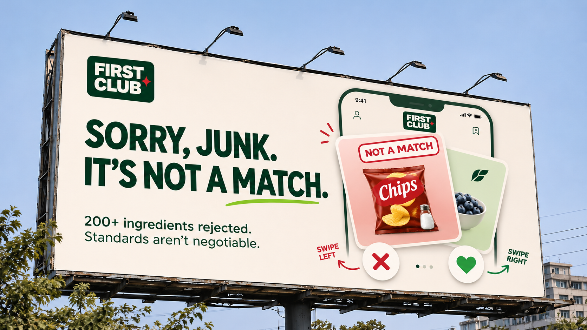

01
Sorry, junk. It's not a match.
A dating-app-inspired billboard that positions FirstClub as having high standards when it comes to food. The familiar left and right swipe shows unhealthy products being rejected, highlighting the 200+ ingredients FirstClub turns down. Playful, and instantly recognisable.
